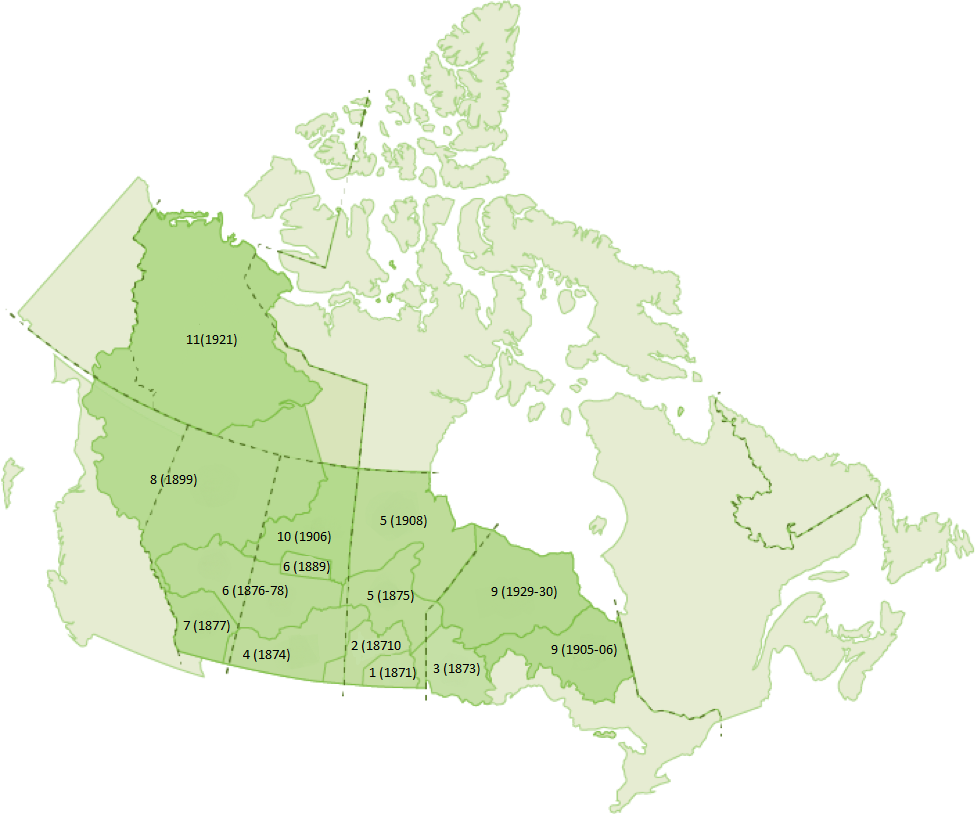
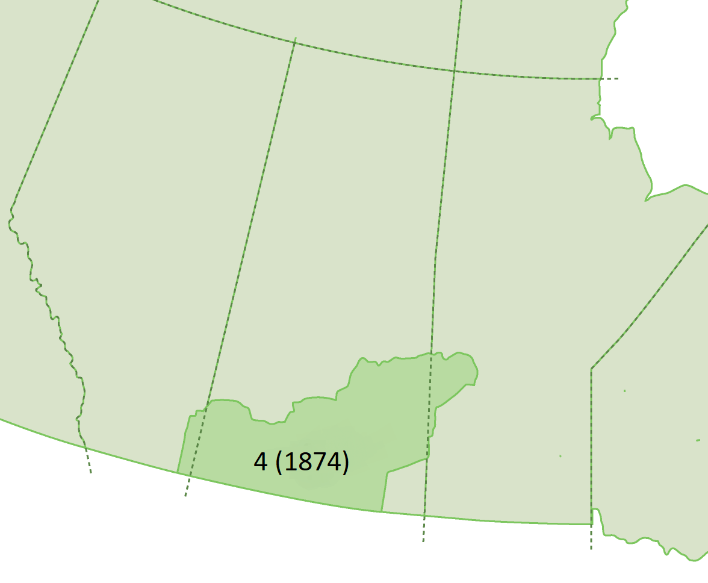

Area and People
These two maps show Treaty 4 relative to the other 10 trees and to current day provinces. The area is upon the majority of the bottom of Saskatchewan and a little bit of the south of Alberta and Manitoba.
 There are 35 first nations who live in parts of Alberta, southern Saskatchewan, and western Manitoba where Treaty 4 applies. The total of 245.1 acres of land from 15 reserves with a total of 2016 for population. Treaty 4 however is an estimate of 195,000 km². Considering that roughly 250 acres goes into one square kilometre I personally think that the Canadian government was shortcoming.